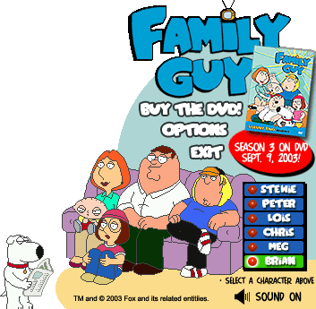

Family Guy Mini-Games/Widgets

Family Guy Desk Buddy
A buddy for your desktop, with the main family to select from.

DOWNLOAD
 .exe file zipped (1.21 MB)
.exe file zipped (1.21 MB)
Stewie-Man/Pac-Stewie
A fan-game that's a fusion between Family Guy and Pac-Man.

DOWNLOAD
.exe file zipped (381 KB)